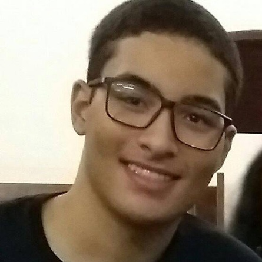

Criadores do Site
Este portal foi idealizado e desenvolvido por estudantes comprometidos com a inovação, preservação histórica e fortalecimento da comunidade acadêmica da Faculdade de Medicina da UFTM.

Sérgio Lemuel Soares Santos
Medicina — Universidade Federal do Triângulo Mineiro (UFTM)Responsável pela idealização do projeto, arquitetura do sistema, design da experiência do usuário (UI/UX), redação de conteúdo e coordenação geral do desenvolvimento do portal institucional do DAGV.

João Paulo Soares Santos
Engenharia da Computação — Instituto Federal do Triângulo Mineiro (IFTM)Responsável pelo desenvolvimento de funcionalidades do sistema, colaboração na arquitetura do software, desenvolvimento Full Stack, integração de inteligência artificial, implementação técnica e apoio no desenvolvimento da plataforma.
Christian Oliveira (CAPS)
Colaborador — DAGV UFTMColaborador no desenvolvimento do portal institucional do DAGV, com apoio em funcionalidades e conteúdo da plataforma.
Gabriel Martins (Zelelé)
Colaborador — DAGV UFTMColaborador no desenvolvimento do portal institucional do DAGV, com apoio em funcionalidades e conteúdo da plataforma.
O Portal do Diretório Acadêmico Gaspar Vianna é resultado da dedicação de estudantes que acreditam no poder da tecnologia como ferramenta para preservar a história, facilitar o acesso à informação e fortalecer a comunidade acadêmica da Faculdade de Medicina da UFTM. Este projeto representa o compromisso com a inovação, a colaboração e a valorização da memória institucional.